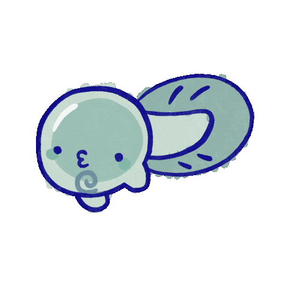

<html>
<head>
    
  <link rel="stylesheet" href="https://fonts.googleapis.com/css2?family=Nanum+Pen+Script&display=swap">
  <style>
    body {
      font-family: "Nanum Pen Script", cursive;     
      background-image: url("img/tadpole_bg.png");
      background-repeat: no-repeat;
      background-size: 100% 100%;
    }
   </style>
  </head>
</html>
<header>
</header>

<audio src="audio/animalese_Tadpole.mp3"></audio>
<audio src="audio/backgroundmusic.mp3" autoplay loop></audio>


<div style="position: relative;">
  <h1 style="font-size: 80px; position: absolute; top: 1; left: 50; z-index: 1;">Tadpole is very happy!</h1>
  <p style="font-size: 48px; position: absolute; top: 110; left: 50; z-index: 1;">La-la-la, la la, la-la-la, thanks for letting me sing with you!</p>
    <p style="font-size: 48px; position: absolute; top: 220; left: 50; z-index: 1;">I love singing so let me sing you the next clue to find Eel:
<br>A lazy eel is fast asleep by the building that connects,
<br>By the doors there are some stairs, go down it’s not complex,
<br>A little red house it hides itself in, 
<br>But what is not hidden is its tail fin. </p>
  
</div>

<footer>
    
  <p style="font-size: 40px; position: absolute; top: 1840; left: 50; z-index: 1;">Copyright © 2023 Walkabout
      <br>All rights reserved.</p>
</footer>
